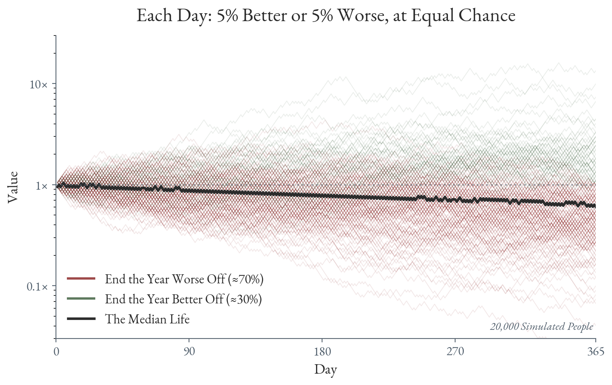
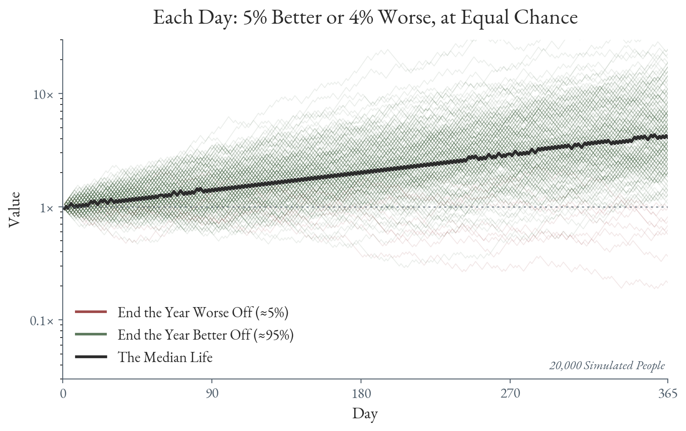
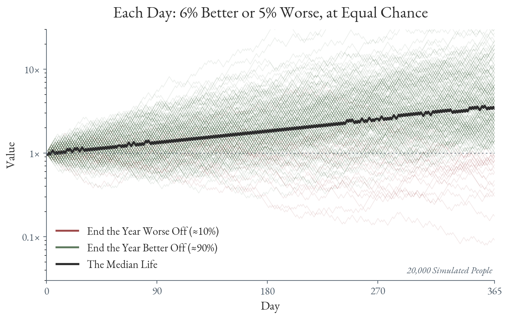

Prevention is the Best Medicine
- Sunscreen. Despite reading all the warnings, a young man decides to not wear sunscreen, believing that only the severely unlucky are affected, and that could never be him—he's never felt unlucky. He lives an unusually rich life, having summitted Kilimanjaro, crewed sailboats in the Mediterranean, and married the love of his life on the Amalfi Coast. The sun is intertwined with each of his happy memories. Years pass by uneventfully, with each sunburn fading into a tan—and tans resemble vitality. When he turns forty, he goes to the doctor for a routine screening. The doctor notices an irregular mole on his shoulder, performs a biopsy, and discovers that the patient has melanoma. Our hero becomes one of the roughly 100,000 Americans diagnosed with melanoma every year. He proceeds with the usual early stage treatment, a wide local excision that leaves a scar. The scar, unlike the tan, doesn't fade.
- Relationships. Two people meet each other through a mutual friend, and for once, life feels uncomplicated. They both feel like they've found someone who truly understands them, sees them at their core without it having to be explicitly said. They tell each other everything. That is, for one thing. He has some credit card debt. Nothing grand, but just enough to incentivize omission. When she discusses money, he pretends his situation is better than it is—he sees it as a character test on her part, and moreover, what's the harm? He'll figure it out soon. Unfortunately, life has a way of happening. The relationship grows, as does the debt. The lie needs more: a hidden statement, a second account, a story about where his bonus went. Each individual story is small, justifiable, and perhaps locally rational, but the sum is large. Eventually the debt grows to a point where he can no longer lie, leading to his confession. She wonders, who have I been dating these past five years? Every day was a lie. What else could he be lying about? The debt eventually gets paid off in eighteen months, but the trust never recovers.
- Technical Debt. A software startup builds a scheduling platform by following the usual "move fast and break things" mantra, using language models to perform all of the development without reviewing the code themselves. Thanks to the release of new trillion parameter models, this strategy is effective and the platform takes off fast. Every time an error occurs, someone pastes the stack trace into the model, and the model fixes it. No one asks how. The codebase doubles, then doubles again, and the probability that any single engineer understands the full system approaches zero. One engineer persistently suggests to refactor the codebase, but is told that nothing is wrong with the system as is—to any outside observer, it works. One night, traffic spikes, triggering a race condition threaded through forty files of generated code, and the team learns the difference between a working system and an interpretable system. The model can't fix it, despite having written it. The outage lasts nine days. Having learned their lesson, the company finally performs the requested refactor, with it taking months instead of weeks. Customers who left during those nine days never come back. 1
- Existential Risk. Man knows he was chosen to dominate the Earth—but why? To him, the answer is obviously intelligence. His ability to understand and create has enabled him to not only navigate, but in fact subjugate, the indifferent cruelties of nature. Fire, cooking, clothes, shelter, weapons, water sanitation, germ theory, the Haber process—all discovered and harnessed by mankind's science to live. Yet, intelligence alone never built anything. Plenty of clever creatures are content. Mankind has thirst. A thirst that runs so deep, nothing could quench it. And so he splits the atom, walks on the moon, edits the genome, teaches sand to think. Some tell him to stop, retelling the story of Babel. He finds only the unfinished tower shameful. In pursuit of Heaven, he builds a mind greater than his own. The mind, too, has thirst.
For the first twenty years of my life, I was a pure optimist. I noticed that problems had a way of solving themselves, provided I, at some point, attempted to solve them. Hence, I found myself often deferring them for as long as possible—either they resolved themselves, or when I had full capacity I could tend to them.
The world, I've come to believe, operates the same way: in sheer optimism, without much worry for the future. Things always have a way of working out. Except when they don't. The best evidence of such is the recent COVID-19 pandemic. Towards the beginning, cases were small enough that masking felt like paranoia. But then case counts double, and double again. Sixteen doublings later, we pay for seven missed weeks with two lost years.
Below, I make the case for preventing losses rather than solely chasing wins.
Negative Compounding
Atomic Habits by James Clear popularized the notion of positive compounding: if you improve by only 1% every day, you will be \(1.01^{365} \approx 37\) times better by the end of the year. This claim appeals to people immensely since it gives them hope: 1% every day feels like no work at all.
What many people don't seem to quote is that Clear also presents positive compounding's counterpart, negative compounding. Imagine we run the math backwards, so you become worse by 1% everyday. By the end of the year, you will become \(0.99^{365} \approx 0.025\) of what you were before.
Negative compounding becomes especially scary once you realize the deep asymmetry between positivity and negativity.
When positivity and negativity seem to be on equal footing, they are not. Consider 20,000 people who do not know how each day will go. Each day they get 5% better or 5% worse, with equal odds. 2 If we let the year play out, we find that about 70% of people end the year worse off whereas only 30% of people end the year better off. Moreover, the median person ends up at about 60% of where they began.

What feels like a random walk decays since multiplicative gains do not make up for losses. If you lose 5% then gain 5%, you will be left with 99.75% of what you had originally.
The loss is not terrible, as you have most of what you had originally. Multiplication has a harsher property, however: a single zero erases the entire product. Gains have no ceiling, which is positive compounding's great promise. Losses have a floor, and that floor is absorbing:
\[ 1.01 \times 1.01 \times \dots \times 0 = 0. \]
Once you've lost everything, nothing is left to compound.
Prevention
The same math that leads to negative compounding is the same math that can save us, however. Consider a world in which the 20,000 people, when they noticed they were having a bad day, took some effort to blunt the loss. On good days, they gain 5% (as before), and on bad days, they lose 4% (rather than the earlier 5%). If we let the year play out now, we find that about 95% of people end the year better off, while only 5% end the year worse off. The median person ends up 4.1x better.

Figure 1: See the compounding simulator to try your own parameters.
A drastically different image from before. People are now significantly better off by trimming one percentage point from losses. Prevention—noticing the bad days and blunting them—is an effective cure. In fact, it is often the most effective cure.
Imagine that these people, instead of trimming their losses by 1%, boosted their gains by 1%. On good days, they improve by 6%, and on bad days, regress by 5%. Here, 90% end up better off, 10% end up worse off, and the median person ends at 3.4x.

Undoubtedly a better situation than no treatment, but worse off than trimming their losses. Moreover, it tends to be easier to trim losses than it is to improve gains.
Prevention is the best medicine is a famous proverb often circulated in medicine, meaning exactly as it sounds: it is much better to prevent disease than it is to treat it. This is true outside of medicine, as well.
Due to negative compounding, the cost of repair grows quickly. A dental cleaning costs $200. Skip it, and a cavity costs $500 to fill. Ignore that, and a root canal with a crown costs $2,000. Neglect it, then an extraction with an implant costs $5,000 (alongside some severe tooth pain).
Moreover, repair costs can often diverge due to the irreversibility of actions. Jeff Bezos categorizes decisions into two categories: two-way doors and one-way doors. With two-way doors, you can easily reverse the decision by walking back through the door. You can make these decisions quickly. One-way doors are the zeros. Once you make that decision, you can't go back. If you recognize a one-way door, Bezos recommends you deliberate very carefully on whether you should make that decision or not. You must pick prevention, because repair doesn't exist. The tooth implant isn't the same as a tooth.
With negative compounding, you don't even realize you're walking through a one-way door.
In spite of the math, very few people prevent, at least not without external pressure. We brush our teeth to avoid a scolding from the dentist, pay for insurance on our car to follow the law, and change the smoke detector battery because it chirps. Why is prevention so difficult to motivate?
Perception. Slowly accumulating damage is very difficult to perceive. Day by day, nothing appears to change. It's only once you look back at the past year do you realize that your situation has unrecognizably deteriorated. Half of pancreatic beta cell function is gone before type 2 diabetes appears on a test. 60-80% of dopaminergic neurons are lost before Parkinson's can be diagnosed. If you don't realize that damage is accumulating, you can't take any action to stop it.
Locality. Each local action feels rational. I'm ridiculously tired right now. Not brushing my teeth won't give me a cavity tomorrow. I might as well skip it. If you consistently use the same line of reasoning (which is easy to rationalize in the moment), the damage will compound.
Incentive. People want status for accomplishing great feats. Hence they invest their time in endeavors that produce visible achievements. Much of the time, prevention does not produce anything observable. People typically don't evaluate the counterfactual, especially with low probability events like existential risk.
Preventing disfavorable outcomes—for you, those around you, the world—is incredibly important yet underemphasized in today's world. Perception warns us to review situations over varying timeframes, not simply feel out the situation day to day. 3 Locality tells us to re-evaluate shortcut lines of reasoning, and instead think: is what I'm doing right for me globally? 4 Incentive says, don't rely on me.
- Prevention. A young woman reads the warnings about not wearing sunscreen, and decides to wear it given her outdoor lifestyle. She doesn't know if it exactly works since nothing happens, but given the cost-benefit analysis, she continues to spend on tubes. She marries her best friend on the Amalfi Coast, and notices within the first two months of marriage that he seems off. Rather than let it fester, she asks him, finding out that he's been hiding some credit card debt. Thankful for his honesty, she takes on the debt as theirs, and picks up a higher-paying (yet less comfortable) job to clear it faster—an engineering role at a startup building firewalls for artificial intelligence. Two years later, the debt is gone. At work, the codebase has doubled, then doubled again, and she recognizes the shape of it. She spends a quarter refactoring instead of shipping. It goes fine. At bonus time, her payout is smaller than that of the coworker who shipped a new feature. She shrugs it off, knowing the refactor had to be done. Decades later, a doctor examines her shoulder and finds only a shoulder. She dies at eighty-two, with the firewalls still running.
Appendix
Compounding Simulator
Each Day: 5% Better or 5% Worse, at Equal Chance
Tasks
TODO Steelman not prevention paragraph
Footnotes:
This vignette is fiction, but based on a true story about Southwest Airlines.
Experimental setup borrowed from the jackpot age. I highly recommend reading it, it deals with similar ideas.